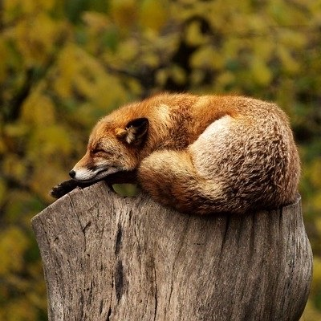
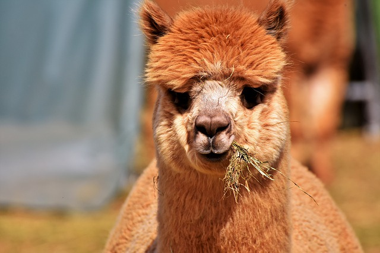

1. Ssaki definicja
Ssaki (Mammalia) – zwierzęta należące do kręgowców, charakteryzujące się głównie występowaniem gruczołów mlekowych u samic, zazwyczaj obecnością owłosienia (włosy lub futro; silnie zredukowane u gatunków wodnych, jak hipopotamy, u waleni całkowicie zanikają przed porodem lub w trakcie) oraz stałocieplnością (potocznie „ciepłokrwistość”). Około 60% ssaków utrzymuje temperaturę w granicach 34–39 °C, 40% wykazuje zróżnicowaną jej zmienność[2].

Stałocieplność umożliwia aktywny tryb życia w różnych środowiskach – od mroźnych obszarów podbiegunowych do gorących tropików. Futro i tłuszcz pomagają uchronić się przed zimnem, a wydzielanie potu i szybki oddech pomagają pozbyć się nadmiernego ciepła. Znaczna zmienność temperatury ciała umożliwia im natomiast ograniczenie strat ciepła do otoczenia.2. Ssaki cechy budowy ciała
Pokrycie ciała
Większość ssaków ma ciało pokryte włosami. Zróżnicowane są one na grube, długie włosy ościste (szczecina dzika) i krótkie, miękkie włosy wełniste (owca). U niektórych ssaków (stekowce, jeżowate, jeżozwierze) włosy są przekształcone w kolce. U innych (np. kotów) wykształcają się włosy czuciowo-zatokowe. Linienie zachodzi najczęściej 2 razy w roku – na wiosnę i jesienią. Ciało ssaków lub niektóre części ich ciała (np. u łuskowców, gryzoni) mogą pokrywać również łuski. Produktami naskórka są wytwory rogowe: pazury, paznokcie i kopyta. Na spodniej stronie stóp i dłoni ssaków występują opuszki, które są zmienionymi zgrubieniami skóry. U niektórych ssaków występują także rogi, będące tworami rogowymi oraz poroże, które jest tworem kostnym. Skóra ssaków jest gruba i zbudowana z dwóch warstw: naskórka i skóry właściwej. Spełnia funkcję ochronną, tworzy torbę lęgową u torbaczy, błonę lotną u nietoperzy i innych ssaków poruszających się lotem ślizgowym oraz błonę pławną u ssaków wodnych. W skórze występują gruczoły łojowe, potowe, zapachowe i mleczne.
Szkielet
Szkielet ssaków wykazuje duży poziom skostnienia.
Czaszka
Kości mózgoczaszki u osobników dorosłych połączone są szwami i tworzą jednolitą puszkę, a u osobników młodych połączone są luźno błoną łącznotkankową. Wolnymi kośćmi w czaszce są tylko kostki słuchowe, żuchwa i kość gnykowa. Trzy kości puszki mózgowej łączą się w miejscu zwanym ciemiączkiem. Plan budowy czaszki ssaków jest podobny do planu budowy czaszki gadów. Przeważnie mózgoczaszka jest większa od trzewioczaszki. Jamę nosową od ustnej oddziela kostne podniebienie. Duża jama nosowa od przodu połączona jest z nozdrzami zewnętrznymi, które tworzą otwór gruszkowaty, a od tyłu z nozdrzami wewnętrznymi. Kość jarzmowa i wyrostek kości skroniowej tworzą łuk jarzmowy. Oczodół może być połączony z dołem skroniowym (u większości ssaków) lub całkowicie otoczony pierścieniem kostnym (przeżuwacze, koniowate, naczelne). Żuchwę buduje jedna kość, której połówki są zrośnięte lub złączone tkanką łączną. Żuchwa łączy się stawowo z panewką kości skroniowej.
Uzębienie
Zęby nie występują u kolczatki, mrówkojada, łuskowców i fiszbinowców. Osadzone są w zębodołach kości szczękowej lub żuchwy i złożone są z jednego lub kilku korzeni oraz korony. U niektórych ssaków zęby szczególnie narażone na ścieranie (np. siekacze gryzoni) nie mają korzeni i dzięki temu wykazują nieograniczony wzrost. Przeważnie u ssaków występuje difiodontyzm (wymiana zębów w trakcie życia). U niektórych (nietoperze, ryjówki) zęby mleczne zanikają jeszcze przed urodzeniem. U waleni występuje monofiodontyzm, tzn. brak uzębienia mlecznego. Cechą charakterystyczną większości ssaków jest heterodontyzm – zróżnicowanie kształtów i wielkości zębów w zależności od ich przeznaczenia. Wtórny homodontyzm obserwuje się jedynie u zębowców, pancerników i słupozębnych. Zęby ssaków zróżnicowane są na siekacze, kły, przedtrzonowce i trzonowce. Zęby dolne umieszczone są w żuchwie, siekacze górne w kości międzyszczękowej, a pozostałe zęby w szczęce. Korony zębów mogą być niskie – brachiodontyzm lub wydłużone – hypsodontyzm. Ze względu na budowę koron zębowych wyróżnia się:  sekodontyzm – korony zębów przypominają piłę pokrytą guzkami ustawionymi w jednym szeregu. Występuje u ssaków drapieżnych selenodontyzm – guzki korony tworzą półksiężycowate listewki. Występuje u przeżuwaczy. lofodontyzm – pionowe blaszki tworzące bardzo skomplikowane układy. Występuje u nieparzystokopytnych plicidentyzm – podobny do lofodontyzmu, ale bardziej skomplikowany. Występuje u gryzoni. Niekiedy między kłami a przedtrzonowcami występuje przerwa – diastema. Budowa i liczba zębów są ważną cechą taksonomiczną, a u niektórych gatunków elementem dymorfizmu płciowego.
{kind=link}
Układ krwionośny
Układ krwionośny charakteryzuje się asymetrycznym układem głównych pni żylnych. Występuje tylko lewy łuk aorty. Rozwija się on z lewostronnego naczynia czwartej pary zarodkowych łuków tętniczych. Od łuku aorty odchodzą 4 tętnice: tętnica podobojczykowa lewa i prawa oraz tętnica szyjna wspólna lewa i prawa. Do głównych naczyń żylnych należą: żyły płucne, żyły czcze przednie, żyła czcza tylna oraz żyła wrotna wątroby. U ssaków nie występuje układ wrotny nerek. Serce składa się z całkowicie oddzielonych od siebie 2 komór i 2 przedsionków. Prawa część serca – „żylna” – zbiera krew odtlenioną z całego organizmu i tłoczy ją do naczyń płucnych, a lewa strona odbiera natlenowaną krew z płuc i przekazuje do aorty. Między przedsionkami i komorami występują zastawki: zastawka trójdzielna (w prawym przedsionku) i zastawka dwudzielna (w lewym przedsionku). U stekowców zastawka trójdzielna znajduje się w lewym przedsionku, a w prawym występuje tylko jedna zastawka. W sercu ssaków występują również 3 zastawki półksiężycowate, które uniemożliwiają cofanie się krwi z aorty i tętnicy płucnej do serca. Erytrocyty ssaków są bezjądrzaste i przeważnie okrągłe. Jedynie u wielbłądowatych występują erytrocyty o kształcie owalnym.
3. Pochodzenie ssaków
Pierwsze ssaki pojawiły się na Ziemi pod koniec triasu, czyli około 200 milionów lat temu. Wywodziły się z gadów ssakokształtnych z rzędu terapsydów (Therapsida), żyjących w permie i triasie.